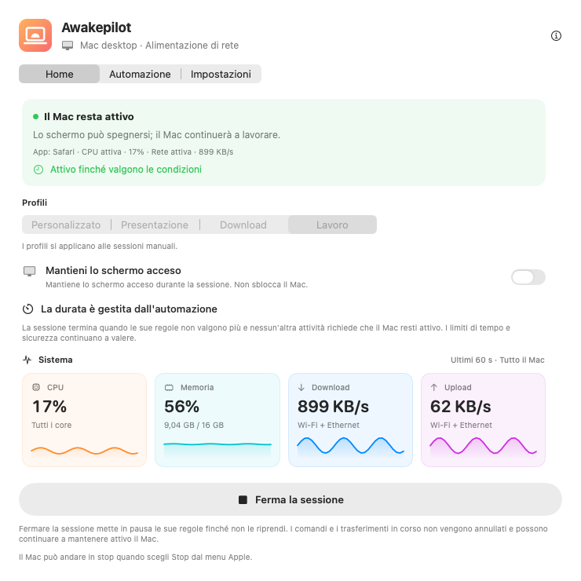
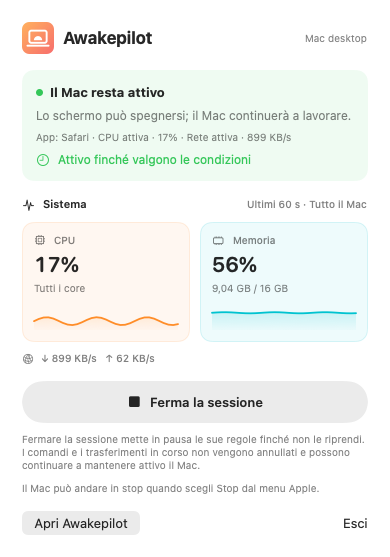
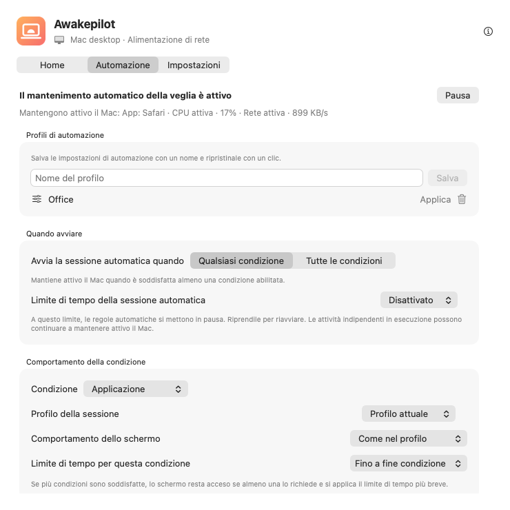

Sessioni flessibili
Mantieni il Mac attivo senza limiti, per una durata o fino a una data e ora precise.
15 min1 h2 h∞
Evita lo stop automatico durante compilazioni, esportazioni video e grandi trasferimenti. Imposta un timer o delle condizioni. Awakepilot smette di mantenere il Mac attivo alla loro fine, salvo altre attività che ne abbiano ancora bisogno.


Scegli una durata o le condizioni di avvio. Al termine della protezione il Mac segue le impostazioni di stop; non entra subito in stop.
Mantieni il Mac attivo senza limiti, per una durata o fino a una data e ora precise.
Segui CPU, memoria, download e upload su grafici chiari in tempo reale.
Scegli cosa monitorare. Mantieni il Mac attivo mentre un’app è aperta, un processo è in esecuzione o un disco scelto è collegato.
Rispetta alimentatori, soglie della batteria, UPS e preferenze dello schermo.
Aiuta a tenere attivi i dischi esterni scelti aggiornando regolarmente un piccolo file su ogni disco scrivibile.
Vedi quando la protezione è iniziata, perché è continuata e quando è finita.

Vedi app, processi e condizioni che tengono attivo il Mac. Quando le regole non valgono più e nessun altro lavoro richiede protezione, tornano le normali impostazioni di stop.
Un’app aperta non prova che un lavoro sia ancora in corso. Meno attività CPU o rete non ne conferma la conclusione.
Scegli cosa osservare, come gestire lo schermo e una durata massima. Controlla condizioni attive e cambiamenti recenti nell’app.
Avvia sulla rete dello studio o sulla VPN di lavoro. Tieni lo schermo disponibile per le chiamate e termina al limite di sicurezza.
Osserva il processo di esportazione per nome e consenti lo spegnimento dello schermo. La protezione termina col processo, salvo altri lavori o regole attivi.
Reagisci al montaggio del disco archivio, proteggi la copia e usa Drive Alive solo sul volume scrivibile scelto.
Avvia con una sola condizione o richiedile tutte. Per esempio: solo sul Wi-Fi dell’ufficio con un disco esterno collegato.
Awakepilot aggiorna un piccolo marcatore sui dischi esterni scrivibili scelti. Non sovrascrive file di altre app e rimuove il proprio marcatore alla disattivazione, anche dopo una riconnessione.
Sai sempre cosa succede. Awakepilot registra le transizioni utili senza riempire la cronologia con ogni campione CPU o rete.
Segui l’attività di rete o un disco di backup. La regola termina se l’attività resta sotto la soglia o il disco viene scollegato.
Osserva un processo del terminale per nome o proteggi il Mac per tutta la durata di un comando.
Applica il profilo con schermo acceso solo durante la condizione di presentazione.
Mantieni il Mac raggiungibile con le protezioni di alimentazione e durata attive.
Nessun account, pubblicità, analisi o telemetria. Le impostazioni restano locali; Awakepilot contatta il proprio sito per aggiornamenti e pacchetti ufficiali.
Leggi i dettagli sulla privacy →Scarica la versione universale per macOS, firmata e autenticata da Apple.
Trascina in Applicazioni. Nessun account o abbonamento richiesto.